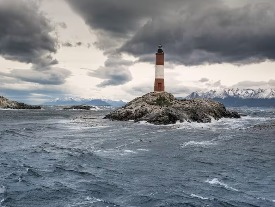
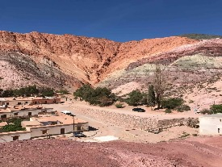
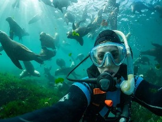
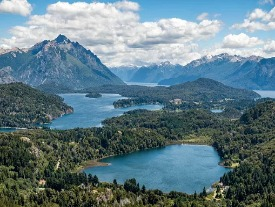
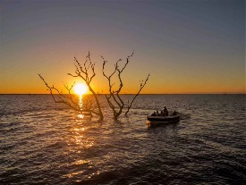
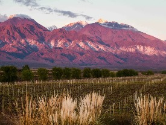
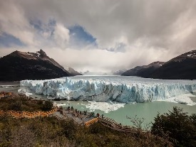
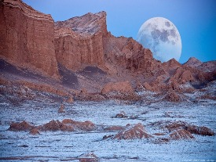
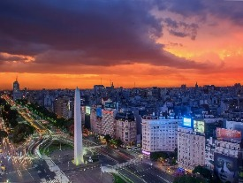

PUERTO IGUAZÚ
(Misiones)

Leer más... ↻
PUERTO IGUAZÚ
El plan de recorrer la ciudad más especial de Misiones, buscada por turistas de todo el mundo y puerta de entrada a una de las Siete Maravillas Naturales del Mundo es un infaltable en cualquier ruta viajera. Este Parque Nacional con 275 majestuosos saltos de agua fue declarado Patrimonio Mundial por la UNESCO en 1984. No importa cómo acompañe el clima, todas las primeras veces en las cataratas del Iguazú son amor a primera vista: ¡preparate para emocionarte hasta las lágrimas!
Más info: Iguazú Argentina
USHUAIA
(Tierra del Fuego)

Leer más... ↻
USHUAIA
El destino más austral de nuestro país tiene su propia mística: rodeado por los picos nevados del monte Olivia y Los Cinco Hermanos, acá los días, y la vida, se guían por los ritmos de la naturaleza. En invierno amanece más tarde que en el resto del mundo y cada 21 de junio se celebra la noche más larga del año (¡a las 5 de la tarde ya está todo oscuro!), los lagos van cambiando de color según la época del año y la nieve es bienvenida durante toda la temporada de esquí en el cerro Castor.
Más info: Turismo Ushuaia
PURMAMARCA & TILCARA
(Jujuy)

Leer más... ↻
PURMAMARCA & TILCARA
Las dos ciudades de la Quebrada de Humahuaca, donde la Pachamama bendice el paisaje de colores tierra y te sorprende con cerros, cultura y tradiciones milenarias. La calidez de su gente, su geografía fabulosa y esa capacidad de emocionar sin importar cuántas veces hayas viajado... Jujuy siempre es amor a primera vista.
Más info: Purmamarca - Jujuy
PUERTO MADRYN
(Chubut)

Leer más... ↻
PUERTO MADRYN
Puerto Madryn es más que una ciudad turística en Chubut o la puerta de entrada a la Península de Valdés. Sus anfitriones la definen como “Planeta Madryn”, y es que viajando a este destino te sumergís en un universo paralelo en donde lo principal es el contacto con la naturaleza (y no tanto la señal del celular). En Madryn, la estepa patagónica se junta con el Mar Argentino y se convierte en un lugar en donde la naturaleza te quiere conocer a vos.
Más info: Puerto Madryn
BARILOCHE
(Rio Negro)

Leer más... ↻
BARILOCHE
Una alternativa es el recorrido de verano por la ciudad más poblada de Río Negro, inmersa en el Parque Nacional Nahuel Huapi y rodeada por lagos, bosques y la cordillera de los Andes. Acá los sentidos se expanden y el combo de naturaleza, aventura y chocolate es la fórmula de la felicidad inesperada que todos quieren probar en este destino patagónico.
Más info: Bariloche
ESTEROS DEL IBERÁ
(Corrientes)

Leer más... ↻
ESTEROS DEL IBERÁ
Una experiencia transformadora en una de las joyas naturales de la provincia de Corrientes (y del planeta) en donde el cielo se calca en la quietud del agua. Te invitamos a agudizar tus sentidos, contemplar la simpleza de la vida y la naturaleza abundante, sin marketing, simplemente estando presente.
Más info: Esteros del Iberá
MENDOZA
(Mendoza)

Leer más... ↻
MENDOZA
Es un de los centros urbanos más importantes del oeste argentino, puerta a los centros de esquí y a una de las regiones vitivinícolas más fecundas del mundo. En Mendoza, la naturaleza es parte y la aventura es un lujo cotidiano: se presta para el road trip y el plan de comer, beber y descansar es sagrado. Acá, lo que existe desde siempre es lo que se instala en el corazón de quienes la visitan.
Más info: Mendoza
GLACIAR PERITO MORENO
(Santa Cruz)

Leer más... ↻
GLACIAR PERITO MORENO
Imposible ser indiferente ante esta gran masa de hielo de 5 km de frente y 60 metros de alto, con una superficie de 257 km². Es "el" glaciar argentino y uno de los más accesibles del mundo. Todos se rinden ante su magnetismo. Se lo aprecia muy bien desde las pasarelas, pero se logran mejores aproximaciones con una navegación, y más todavía si se hace algún trekking sobre el hielo con grampones. Como sea, su mejor versión es siempre el atardecer.
Más info: Glaciar Perito Moreno
VALLE DE LA LUNA
(San Juan)

Leer más... ↻
VALLE DE LA LUNA
Este rincón del mundo es conocido por la comunidad científica internacional por haber sido el espacio donde más fósiles de dinosaurios se han encontrado. Es una enciclopedia abierta sobre los inicios del planeta. Pero no es sólo eso. Su paisaje parece sacado de una película de ciencia ficción. Este valle se ubica en el Parque Provincial Ischigualasto, que en quechua significa “donde se posa la luna” y de ahí viene el nombre de este lugar.
Más info: Valle de la Luna
BUENOS AIRES
(Buenos Aires)

Leer más... ↻
BUENOS AIRES
Es una parada obligada, que se encuentra entre los destinos de América del Sur más elegidos por los turistas internacionales. La oferta que esta ciudad brinda, es tan amplia y variada que es imposible aburrirse. Espacios verdes, historia, el tango, el fútbol; la lista puede hacerse interminable. La Boca, Puerto Madero, San Telmo, Palermo, Recoleta y hasta el Microcentro son los barrios más elegidos para recorrer, como así también el Teatro Colón, el CCK, los museos de arte y centros culturales.
Más info: Buenos Aires